【ホバーユニット（＋ライフルキャノン）】
はじめに
今回のアイテムはＧシリーズでのとあるモビルスーツのバックパックを参考に３Ｄ風の２Ｄでアレンジしています。
マインクラフトのキャラクターは元々等身が低いので、▶ファンネルユニット実装時と同じようにＳＤ風に仕上がりました。
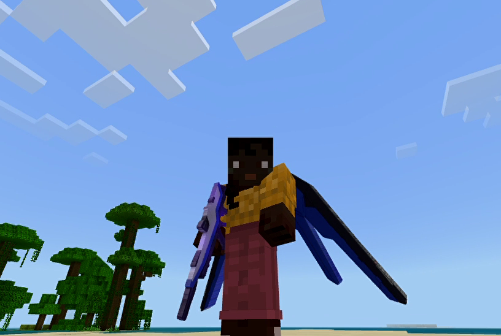
※このアイテムはオフハンド専用装備なので、他のアイテムと組み合わせて使います。今回の実装に合わせてライフルも追加実装しています。
マインクラフトのキャラクターは元々等身が低いので、▶ファンネルユニット実装時と同じようにＳＤ風に仕上がりました。
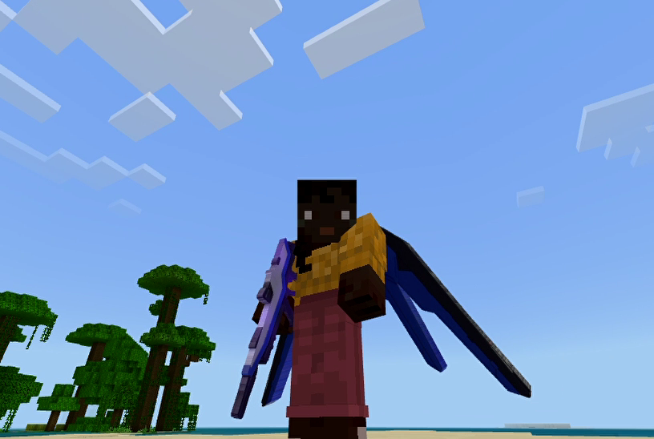
※このアイテムはオフハンド専用装備なので、他のアイテムと組み合わせて使います。今回の実装に合わせてライフルも追加実装しています。
オフハンド装備の効果
ホバーユニットはメインハンド装備の特定アイテム（ファンネルユニット、ライフルキャノン）にＮジャマーの影響を与えて性能を向上させます。
例えばライフルキャノンの場合は砲弾を発射しますが、ホバーユニットの有り無しで以下のように変化します。
▼ホバーユニット無しの時

▼ホバーユニット有りの時

動画データが間引きされているので少しわかりにくいですが、砲弾と爆発がひとまわり大きくなり威力も倍増しています。
※▶風の杖でご紹介した補充アイテム要らずの無限打ちの実装を行っているので弾切れの心配はありません。
※対人戦を意識すると地形が悲惨な状況になる事が予想されますので、爆発によるブロックの破壊は起こらないように実装しています。
ちなみにファンネルユニットを装備している場合は、同時に扱えるファンネルが６機から１２機に増えます。
例えばライフルキャノンの場合は砲弾を発射しますが、ホバーユニットの有り無しで以下のように変化します。
▼ホバーユニット無しの時
▼ホバーユニット有りの時
動画データが間引きされているので少しわかりにくいですが、砲弾と爆発がひとまわり大きくなり威力も倍増しています。
※▶風の杖でご紹介した補充アイテム要らずの無限打ちの実装を行っているので弾切れの心配はありません。
※対人戦を意識すると地形が悲惨な状況になる事が予想されますので、爆発によるブロックの破壊は起こらないように実装しています。
ちなみにファンネルユニットを装備している場合は、同時に扱えるファンネルが６機から１２機に増えます。
ホバーユニットによる飛行
しゃがんだ状態でファンネルユニット、あるいはライフルキャノンを使うとホバリングモードへ移行後飛行を開始します。

ファンネルユニットとライフルキャノンは飛行による直進と舵取りをコントロールします。
例えば以下のようにプレイヤーが向いている方向へ旋回する事ができ、ジャンプボタンで安全に着地する事ができます。

以下のアイテムには飛行中の役割分担があります。

通常は上の画面のようにライフルキャノンなどの専用アイテムを使わない限り飛行中の攻撃はできません。
ですが、ホバーユニットによる飛行中にメインハンドアイテムを外すか持ち替える事でその場で停滞するホバリングモードへ移行します。
この時は以下の画面のように他の武器を使う事が可能となります。
▼▶光の剣の場合

上空からバルカン砲を放っている気分になれます。
ファンネルユニットとライフルキャノンは飛行による直進と舵取りをコントロールします。
例えば以下のようにプレイヤーが向いている方向へ旋回する事ができ、ジャンプボタンで安全に着地する事ができます。
以下のアイテムには飛行中の役割分担があります。
- ・ファンネルユニット
-
高度を調整する。
飛行中に使うとファンネルは射出できないが、プレイヤー目線で水平面から上を向いている時は上昇し、下を向いている時は下降する。 - ・ライフルキャノン
- 高度調整はできないが、上空からの砲撃が可能。
ホバリングモード
▼飛行中のライフルによる攻撃通常は上の画面のようにライフルキャノンなどの専用アイテムを使わない限り飛行中の攻撃はできません。
ですが、ホバーユニットによる飛行中にメインハンドアイテムを外すか持ち替える事でその場で停滞するホバリングモードへ移行します。
この時は以下の画面のように他の武器を使う事が可能となります。
▼▶光の剣の場合
上空からバルカン砲を放っている気分になれます。
「ライフルキャノン」の取得
本環境のビヘイビアパック／リソースパックを含めたアドオンパックを適用しておけば、以下の方法で「ライフルキャノン」が手に入ります。
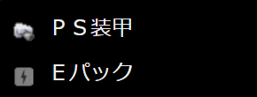
※「ＰＳ装甲」は釣りでのジャンク品として登録しています。ジャンク品の登録方法については▶釣りアイテム（junk.jsonの定義）のページをご覧ください。
※「Ｅパック」は武器鍛冶師との取引で手に入ります。
▼レシピパターン
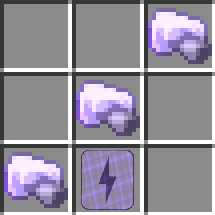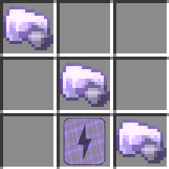
▶ネットショップ
※▶召雷の魔石実装時と同じようにWebsocketサーバーを介したネットショップとの接続中は発射できないようにしています。

クラフトする場合
▼必要な素材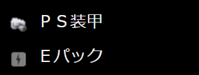
※「ＰＳ装甲」は釣りでのジャンク品として登録しています。ジャンク品の登録方法については▶釣りアイテム（junk.jsonの定義）のページをご覧ください。
※「Ｅパック」は武器鍛冶師との取引で手に入ります。
▼レシピパターン
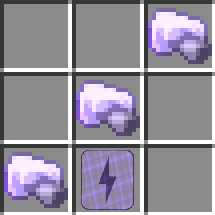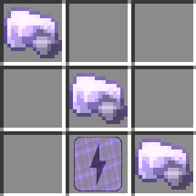
ショップで購入する場合
以下のショップで購入できます。▶ネットショップ
※▶召雷の魔石実装時と同じようにWebsocketサーバーを介したネットショップとの接続中は発射できないようにしています。
コマンドで取得する場合
以下はワールドオーナーやシステム組み込み用としてコマンドで取得する方法です。「ホバーユニット」の取得
本環境のビヘイビアパック／リソースパックを含めたアドオンパックを適用しておけば、以下の方法で「ホバーユニット」が手に入ります。
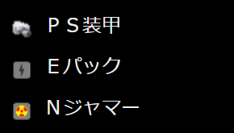
※「ＰＳ装甲」は釣りでのジャンク品として登録しています。ジャンク品の登録方法については▶釣りアイテム（junk.jsonの定義）のページをご覧ください。
※「Ｅパック」は武器鍛冶師との取引で手に入ります。
※「Ｎジャマー」は行商人との取引で手に入ります。
▼レシピパターン
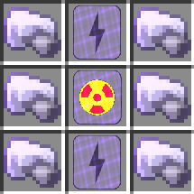
▶ネットショップ

クラフトする場合
▼必要な素材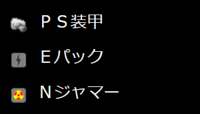
※「ＰＳ装甲」は釣りでのジャンク品として登録しています。ジャンク品の登録方法については▶釣りアイテム（junk.jsonの定義）のページをご覧ください。
※「Ｅパック」は武器鍛冶師との取引で手に入ります。
※「Ｎジャマー」は行商人との取引で手に入ります。
▼レシピパターン
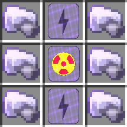
ショップで購入する場合
以下のショップで購入できます。▶ネットショップ
コマンドで取得する場合
以下はワールドオーナーやシステム組み込み用としてコマンドで取得する方法です。サーバーサイドの処理
ホバーユニットを使った飛行前後のコントロール（ＨＵＤ表示や落下ダメージ制御など）はサーバーサイドが担っています。
プレイヤーのイベント検知は、▶イベントデータの詳細（Websocketサーバー用）のページでご紹介させて頂いた
飛行中のファンネルユニットによる高度調整を行う時には、
プレイヤーのイベント検知は、▶イベントデータの詳細（Websocketサーバー用）のページでご紹介させて頂いた
PlayerTravelledやItemUsedのイベントを利用していますが、状態検知（ホバーユニットの装備状態やしゃがんだ状態）についてはItemUsedイベントのバリアント値を介してやり取りを行っています。飛行中のファンネルユニットによる高度調整を行う時には、
ItemUsedイベントを検知後プレイヤーの仰角を指定したquerytarget（Websocketサーバー専用）コマンドを発行する事で制御しています。おわりに
飛行中の実装は、ファンネルユニット実装時のAI機能を飛行機能に絞って再構築後、▶座れるエンティティと組み合わせて作成しています。
また、エンティティの召喚時にマインクラフトユーザー名をタグとして付与しているので、他のプレイヤーと競合しないように配慮しています。
今回ホバーユニット自体には特殊な実装はありませんが、ライフルキャノンは▶発射アイテムとして実装後、▶光の剣のライトバレットをベースにして▶発射体エンティティを作成しています。
また、エンティティの召喚時にマインクラフトユーザー名をタグとして付与しているので、他のプレイヤーと競合しないように配慮しています。
今回ホバーユニット自体には特殊な実装はありませんが、ライフルキャノンは▶発射アイテムとして実装後、▶光の剣のライトバレットをベースにして▶発射体エンティティを作成しています。